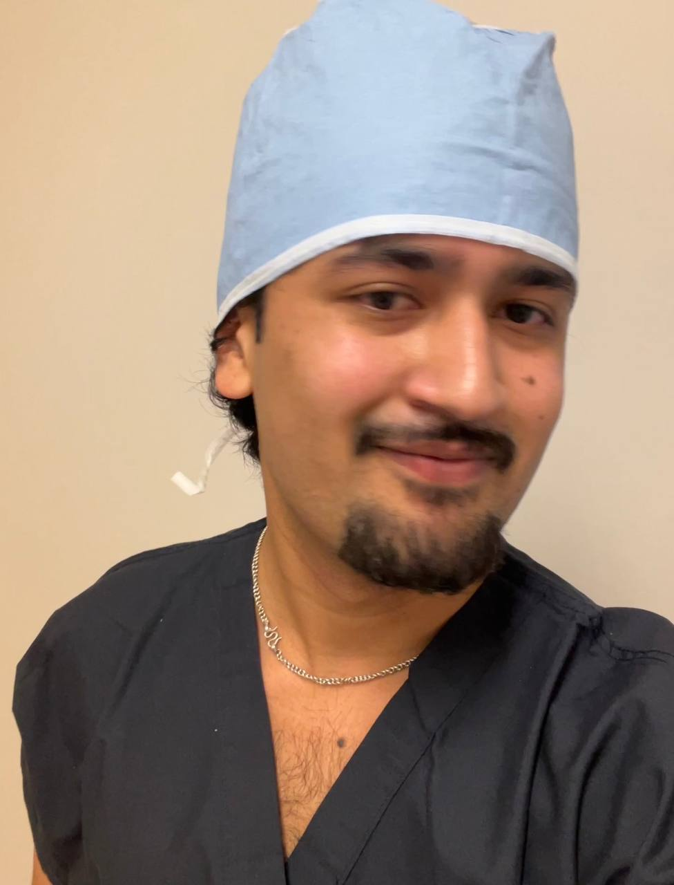

PLAYER ONE
Ashish Giri
- In the lab, trying to understand how mechanochemical engineering can shape stem cell differentiation.
- Watching Manchester United, usually frowning at how badly we are playing.
- In humanities libraries, reading about the Nepal-Tibet relationship.

Research Experiences
Research is the part of my life that has stayed the most constant, but it has never looked the same in every place. These are the labs and institutions where I learned how to design experiments, build workflows, and think across materials, biology, and computation.
The common thread has been trying to make complicated systems more intentional, whether that meant stem-cell biomaterials, composite manufacturing, antimicrobial coatings, or machine-learning-based cell analysis.
Soccer
The most reliable way to clear my head, compete, and stop overthinking for a while.
Cooking
I like cooking for the same reason I like engineering: iteration, instinct, timing, and getting the details right.
Photography
The shots I like most usually have atmosphere: water, night, weather, reflections, or a scene that feels half-quiet and half-cinematic.
Work
The technical side is still here, just without turning the whole site into a brochure.